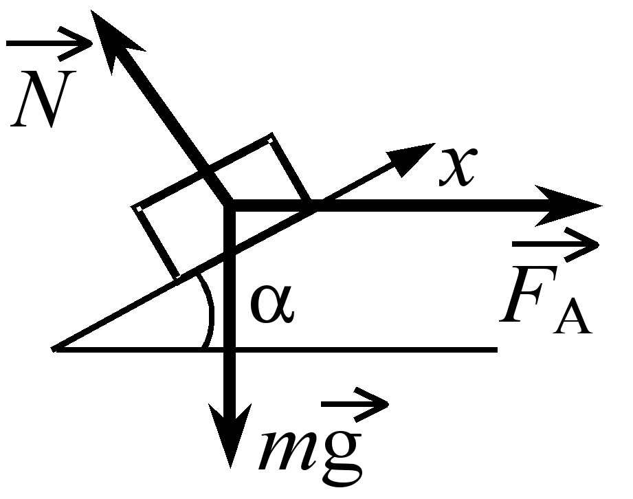
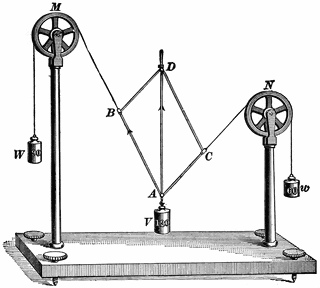

Механика - раздел физики, наука, изучающая движение материальных тел и взаимодействие между ними; при этом движением в механике называют изменение во времени взаимного положения тел или их частей в пространстве.
В частности, каждое тело в любой момент времени занимает определенное положение в пространстве относительно других тел. Если со временем тело меняет положение в пространстве, то говорят, что тело движется, совершает механическое движение.
Механическим движением называется изменение взаимного положения тел в пространстве с течением времени.
В частности, каждое тело в любой момент времени занимает определенное положение в пространстве относительно других тел. Если со временем тело меняет положение в пространстве, то говорят, что тело движется, совершает механическое движение.
Механическим движением называется изменение взаимного положения тел в пространстве с течением времени.

Основная задача механики – определение положения тела в любой момент времени. Для этого нужно уметь кратко и точно указать, как движется тело, как при том или ином движении изменяется его положение с течением времени. Другими словами – найти математическое описание движения, т. е. установить сязи между величинами, характеризующими механическое движение.

При изучении движения материальных тел используют такие понятия, как:
Материальная точка – тело, размерами которого в данных условиях движения можно пренебречь. Это понятие используется при поступательном движении, или когда в изучаемом движении можно пренебречь вращением тела вокруг его центра масс,
Абсолютно твердое тело – тело, расстояние между двумя любыми точками которого не меняется. Понятие применяется, когда можно пренебречь деформацией тела.
Сплошная изменимая среда – понятие применимо, когда можно пренебречь молекулярной структурой тела. Используется при изучении движения жидкостей, газов, деформируемых твердых тел.

Классическая механика основана на принципе относительности Галилея и законах Ньютона. Поэтому, ее еще называют – механикой Ньютона.
Механика изучает движение материальных тел, взаимодействия между материальными телами, общие законы изменения положений тел со временем, а также причины вызывающие эти изменения.
Общие законы механики подразумевают, что они справедливы при изучении движения и взаимодействия любых материальных тел (кроме элементарных частиц) от микроскопических размеров до объектов астрономических.